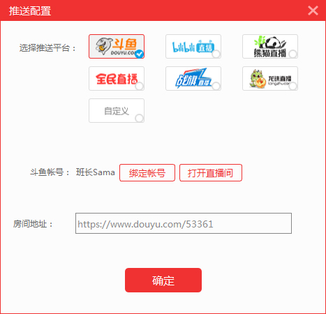
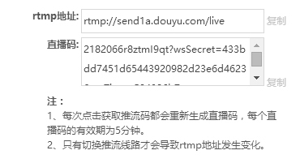
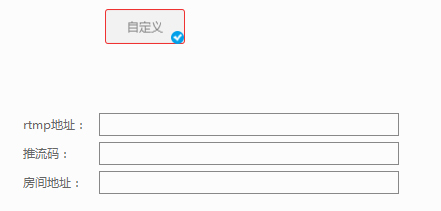
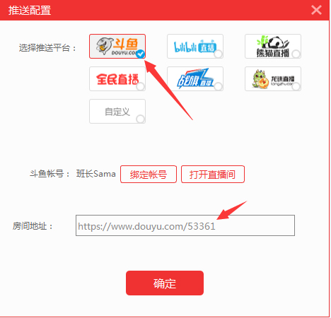

1 选择心仪的网络直播平台，完成注册，并提交身份证和银行卡信息进行实名认证。通过审核后获取主播资格；
2 点击主界面底部控制台的“推送”按钮，进入推送配置界面，如下图；
3 在推送配置界面点击选择主播心仪的直播平台，界面会出现“绑定账号”按钮和打开直播间按钮；
4 点击“绑定账号”进入第三方直播平台登录注册页面，在这里输入主播的账号密码点击登陆，即可绑定成功；在绑定成功后点击“打开直播间”，浏览器自动打开该直播间，没有绑定账号时点击无效；
5 登录成功后，系统将自动开启直播间并获取最新推流地址。如需更换账号，重新点击“绑定账号”按钮即可；

1 播助手推送配置界面没有主播心仪的直播平台时，主播可自定义推流平台；
2 登录个人直播间，点击开启直播按钮，获取个人直播间专属的推流地址和直播码；

3 将获取到的推流地址（rtmp）、直播码和网页直播间地址（http）输入地址栏；

4 绑定成功后界面会显示绑定的账号名称和房间地址，如下图。选择主播需要推流的平台，点击右下角的“O”选中平台，点击确定按钮。到这里推流配置就设置成功啦，需要更改设置主播参照以上操作即可。
PS:推流平台最多可同时设置2个平台，在直播过程中是不可以更改的哦。
